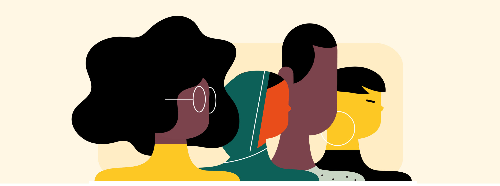

Es dedica als drets d’igualtat i equitat en la migració i el refugi, buscant que totes les persones, independentment d’on vinguin, siguin tractades amb respecte i tinguin les mateixes oportunitats. La igualtat significa que tothom ha de ser tractat igual davant la llei, i l’equitat significa ajudar més a qui més ho necessita. També és important evitar el rebuig o el maltractament als migrants. Defensar aquests drets ajuda a tenir una societat més justa per a tothom. És una organització sense ànim de lucre que treballa per ajudar les persones que no poden tornar al seu país d’origen per motius de seguretat, persecució o violència, així com aquelles que busquen una vida millor en un altre país. El seu objectiu és garantir que aquestes persones tinguin accés a serveis bàsics com atenció mèdica, educació i suport legal.

Aquest grup s'encarrega que aquestes persones entenguin els seus drets i rebin ajuda amb documents importants, com demanar asil o permisos per quedar-se. També els defensen si tenen problemes legals o si no se’ls respecten els drets.

Aquest grup els ajuda a sentir-se part de la comunitat. Els ensenyen l’idioma, els ajuden a trobar feina i un lloc on viure, els donen eines per valdre’s per ells mateixos i els ensenyen sobre la cultura i les costums del lloc.